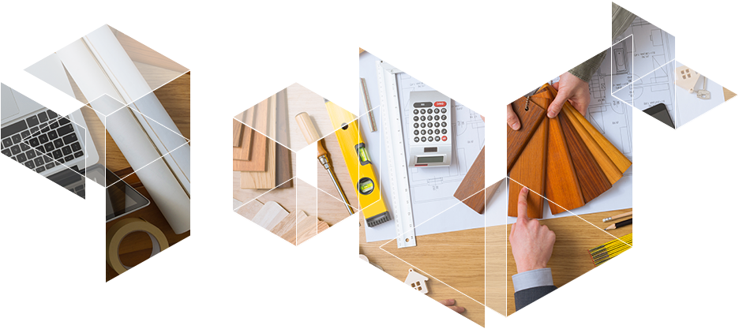
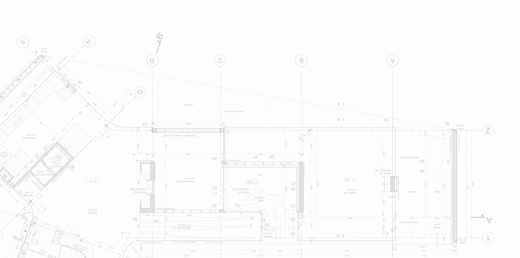

02
פרוייקטים
ניהול

משרד י. בנדל ניהול פרויקטים מתמחה בניהול, תיאום ופיקוח על עבודות בניה וגמר מורכבות, החל מעבודות הבינוי, דרך התכנון והביצוע של תשתיות המבנה, חלוקת המשרדים לרבות חלוקת open space ועד לעיצוב הפנים שלו – חיפויים, ריהוט ועוד. לקוחותינו נהנים ממענה מקצועי ומלא עבור כל שלבי הפרויקט משלב התכנון והייזום ועד לבדק לאחר האכלוס.

ניהול הפרוייקטים
בשלב התכנון
- עזרה וליווי בכל הנוגע למסמכים חוזיים מול היזם.
- ליווי כל שלבי התכנון כולל בחירת והפעלת האדריכל, היועצים והמתכננים השונים. הקפדה על תאום בין תכניות האדריכל והיועצים.
- עריכת לוח זמנים לתכנון.
- בניית תהליכי ניהול יעילים ומובנים אשר מסייעים לניהול השוטף. בכללם, עריכת ישיבות תיאום תכנון להבטחת ביצוע התכנון תוך �עמידה בלוחות הזמנים שהוגדרו ובהתאם לפרוגרמה.
- ייעוץ לאדריכל ולמתכנני המערכות ביחס לעריכת המפרטים וכתבי הכמויות.
- תאום עם היועץ המשפטי של הלקוח בכל הנוגע למסמכי �ההצעות והפצתם.
- הכנת רשימות קבלנים וספקים בתאום עם המתכננים והמזמין.
- עריכת המכרזים והפצתם לקבלת הצעות מחיר מהקבלנים.
- עדכון האומדן התקציבי בהתאם לאומדנים המפורטים שיכינו �המתכננים.
בקרה על
הצעות המחיר וחתימת חוזים
- ניתוח של הצעות המחיר מהקבלנים ועריכת טבלת השוואה מפורטת.
- הכנת חוות דעת מקצועית ומסמך המלצות לבחירת קבלני הביצוע.
- ניהול משא ומתן עם קבלני הביצוע.
- עריכת הצד המנהלי טכני של החוזים עם הקבלנים בתיאום עם �היועץ המשפטי של המזמין.
- הכנה ועדכון של אומדן תקציבי לפרויקט בהתאם לחוזים שיחתמו �עם הקבלנים.
- ביקורת על מערך התשלומים לקבלני הביצוע.
ניהול הפרוייקטים
בשלב הביצוע
- ניהול עבודת הקבלנים בהתאם לתוכניות, המפרטים ולהוראות �המתכננים ובתאום עם יזם הפרויקט.
- פיקוח על טיב החומרים והמוצרים בהם נעשה שימוש בפרויקט.
- ניהול ישיבות תיאום קבועות בין קבלני הביצוע בפרויקט, אשר �נועדו לשלב בין עבודות הקבלנים השונים מבחינה מקצועית והן מבחינת לוח הזמנים.
- שמירה על המסגרת התקציבית בתקופת ביצוע הפרויקט ודיווח למזמין על חריגות.
- מעקב והובלת התקדמות הביצוע בהתאם ללוח הזמנים המוסכם.
- דיווח שוטף למזמין בכל הקשור לרמת והתקדמות הביצוע וכן של �בעיות שנוצרות במהלכו.
- בדיקה ואישור של החשבונות החלקיים והסופיים של הקבלנים �בהתאם לחוזים ועל סמך מדידה של הכמויות שנמדדו ואושרו.
- קבלה ואישור של הפרויקט המושלם ובחינה כי התבצעו כל עבודות �הקבלנים כפי שהללו התחייבות אליהם בחוזים.
- ביצוע בדק של הפרויקט - רישום התיקונים, ההשלמות והשיפורים �הנדרשים מהקבלנים בשעת המסירה, פיקוח על הביצוע ואישורו �וקבלה סופית של הפרויקט.